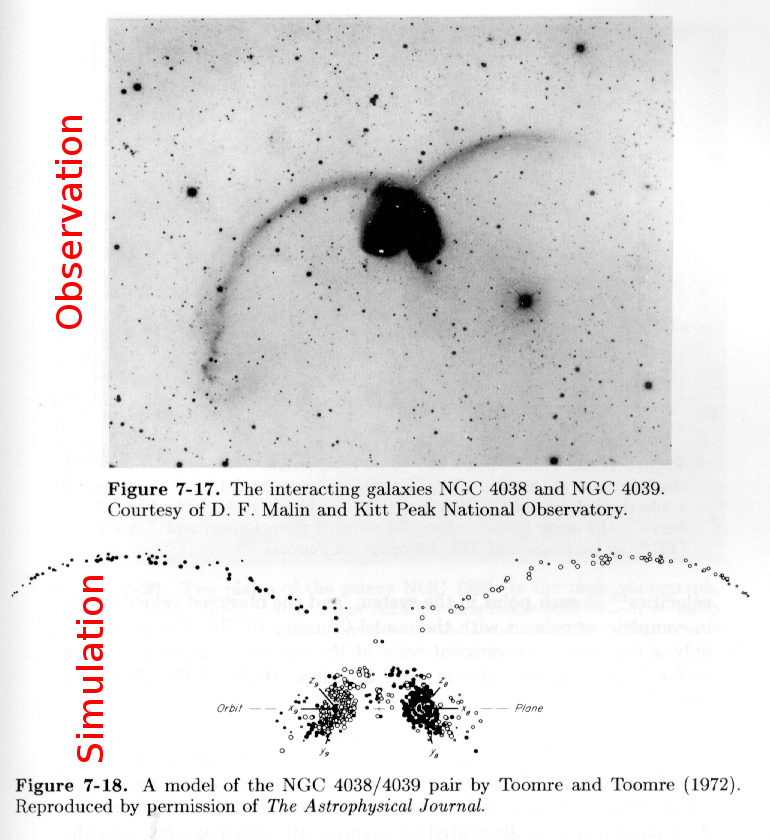
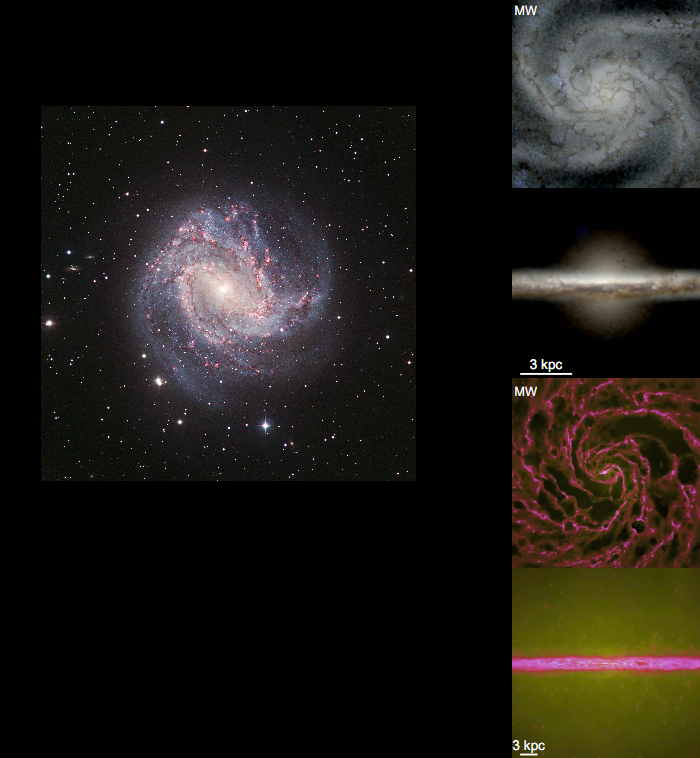
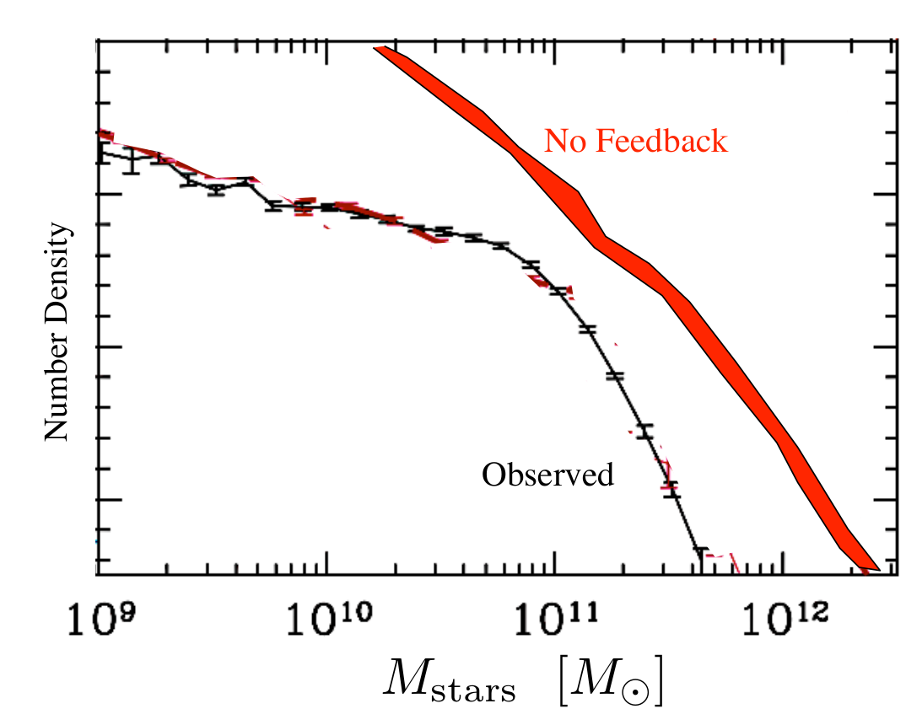
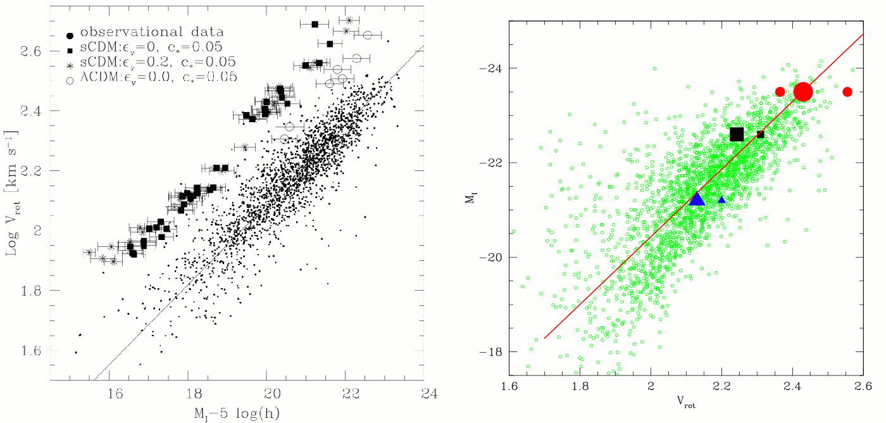
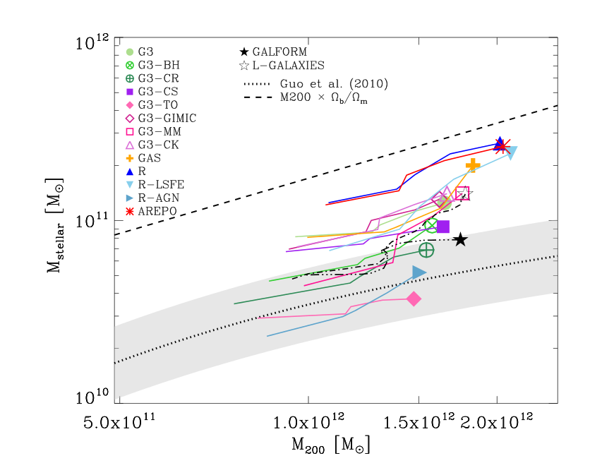
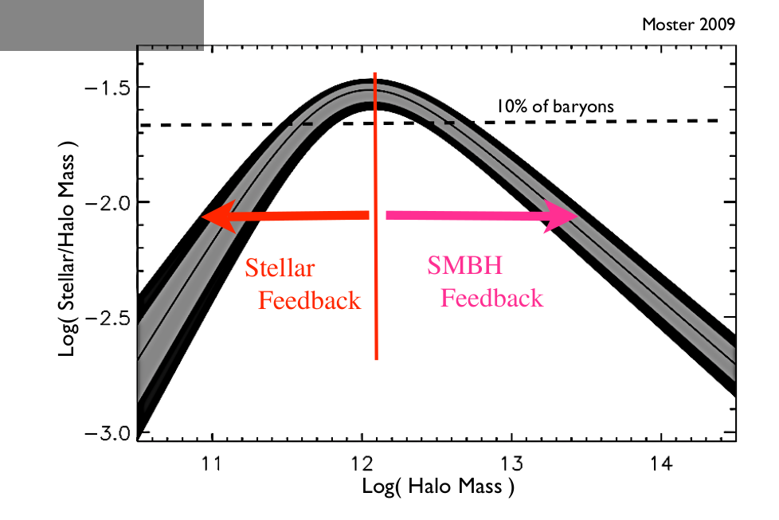
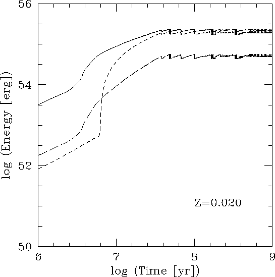

## Ben Keller
### Symposium Day ### September 4, 2012
The Antennae Galaxies: An Early Success
Caroll & Ostlie An Introduction To Modern Astrophysics
# $$ \nabla^2 \Phi = 4\pi G \rho $$
# The only physics you need is gravity
Simuating collisionless systems is well understood

Simuating galaxies is much harder
Hopkins, Quatert, & Murray 2012, MNRAS 421 4
Galaxy Observables
- Luminosity Functions
- Tully-Fisher/Faber-Jackson Relation
- Schmidt Law
- Star Formation History
- Outflows
Luminosity Function
Hopkins 2012, Santa Cruz Galaxy Workshop
Tully-Fisher Relationship: Correct?
Navarro & Steinmetz 2000, ApJ 528 2
Governato 2006, Marseille Cosmology Conference
Star Formation History
Scannapieco et al 2012, MNRAS 423 2
Outflows
Why Don't Simulations Work?
- Angular Momentum Catastrophe
- Overcooling
- Too Many Stars!
- Supernovae
- Massive Stars
- Radiation Pressure
- UV Radiation/Ionization
- Stellar Winds
- Active Galactic Nuclei
Different Processes Govern Different Galaxies
Hopkins 2012, Santa Cruz Galaxy Workshop
The Luminosity of Feedback Sources is Well Known
Letherer et al 1999, ApJS 123 3
The Answers Seem Obvious
- How Much Energy?
- Thermal or Kinetic Energy?
- Where Do You Put it?
- When Do You Put it?
How to translate them into a model isn't
Feedback Processes are Unresolved!
$ r_{SNe} \lt\lt $ Spatial Resolution
$ r_{GMC} \lt\lt $ Spatial Resolution
$ t_{cool} \lt\lt $ Temporal Resolution
Start Small, Work Up
- Individual Star Clusters
- Galactic Disk Slices
- Isolated Galaxies